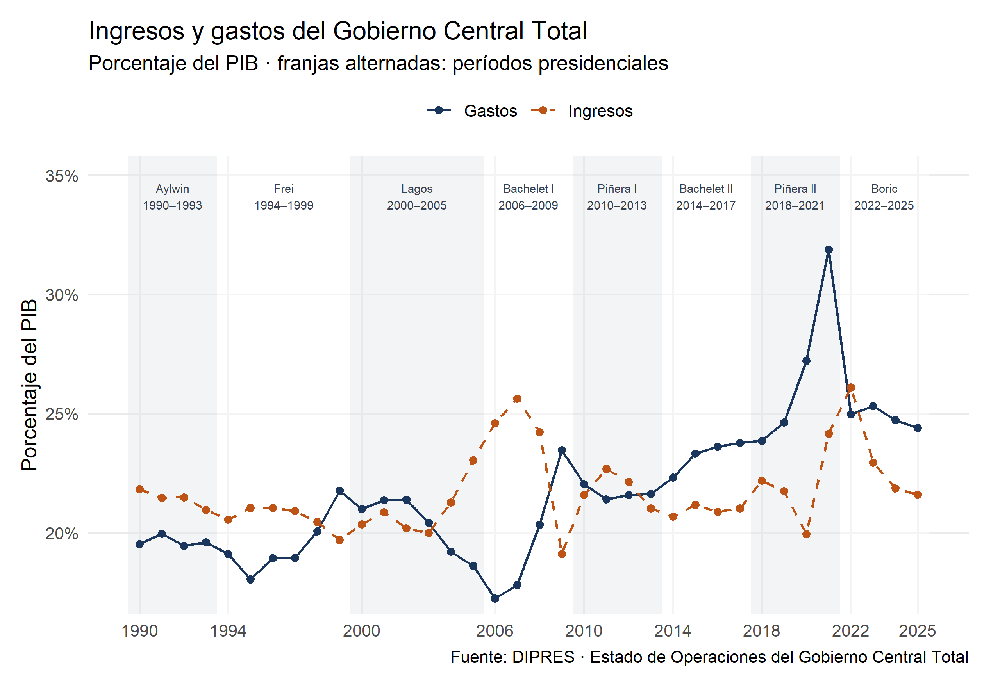
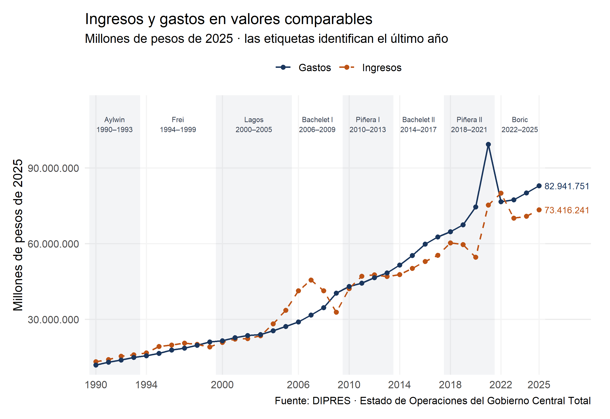
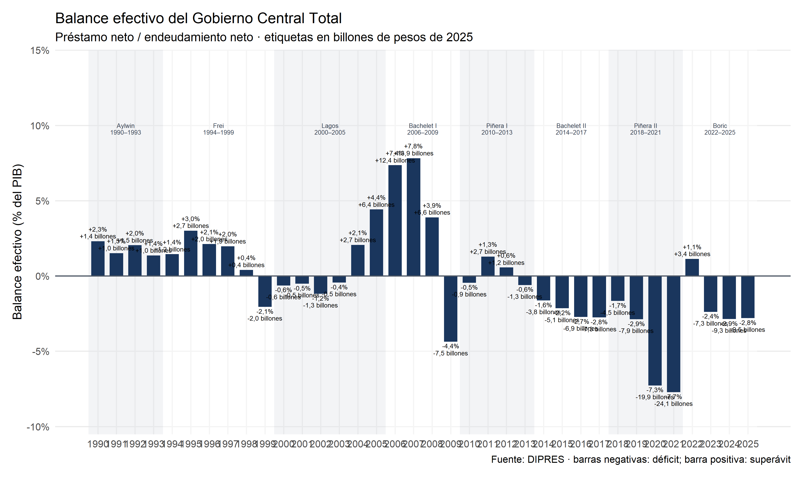

¿Cómo evolucionaron los ingresos, gastos y el balance efectivo del Gobierno Central desde 1990? El orden fiscal forma parte del anuncio de marzo. Fuente del alcance.
Conceptos para leer esta página
Gobierno Central Total: parte del sector público medida por DIPRES; no incluye automáticamente municipios, empresas públicas ni todo el Estado.
Ingreso público: recursos que recibe el Gobierno Central, incluidos impuestos y otras operaciones registradas en el cuadro fiscal.
Gasto público: recursos desembolsados por el Gobierno Central en un año.
Balance efectivo: diferencia entre ingresos y gastos. Si es negativo hay déficit; si es positivo hay superávit.
PIB: tamaño anual de la economía. Un porcentaje del PIB permite comparar años de distinta escala.
En 2025, los ingresos totales equivalen a 21,6% del PIB (73.416.241 millones de pesos de 2025); los gastos, a 24,4% (82.941.751 millones). El balance efectivo es -2,8% del PIB (-9.525.510 millones). Un valor negativo indica déficit.
Ingresos y gastos como porcentaje del PIB
Código
# Ingresos y gastos como porcentaje del PIB. Las franjas distinguen períodos# presidenciales, pero no atribuyen a cada gobierno los cambios observados.g_pct <- d |>select(anio, Ingresos = ingresos_pct_pib, Gastos = gastos_pct_pib) |>pivot_longer(-anio, names_to ='serie', values_to ='valor')periodos_pct <- periodos |>mutate(etiqueta_y =max(g_pct$valor) *1.07)grafico_pct <-ggplot(g_pct, aes(anio, valor, colour = serie, linetype = serie)) +geom_rect(data = periodos_pct,aes(xmin = inicio - .5, xmax = fin + .5, ymin =-Inf, ymax =Inf,fill = tono), inherit.aes =FALSE, alpha = .45) +geom_text(data = periodos_pct,aes(x = (inicio + fin) /2, y = etiqueta_y, label = etiqueta),inherit.aes =FALSE, size =2.35, colour ='#374151') +geom_line(linewidth = .7) +geom_point(size =1.6) +scale_colour_manual(values =c(Ingresos = paleta[2], Gastos = paleta[1])) +scale_linetype_manual(values =c(Ingresos ='dashed', Gastos ='solid')) +scale_fill_identity() +scale_x_continuous(breaks = marcas_periodos) +scale_y_continuous(labels =label_number(suffix ='%', decimal.mark =','),expand =expansion(mult =c(.04, .10))) +labs(title ='Ingresos y gastos del Gobierno Central Total',subtitle ='Porcentaje del PIB · franjas alternadas: períodos presidenciales',x =NULL, y ='Porcentaje del PIB', colour =NULL, linetype =NULL,caption ='Fuente: DIPRES · Estado de Operaciones del Gobierno Central Total') +theme(legend.position ='top', panel.grid.minor =element_blank())print(grafico_pct)

Cada punto representa un año. El eje marca los inicios y finales de los períodos presidenciales; las franjas no prueban que un gobierno cause los cambios observados.
Cómo leer el gráfico. Las dos líneas expresan ingresos y gastos como porcentaje del PIB, lo que permite comparar su tamaño con el de la economía. Las franjas identifican los períodos presidenciales para facilitar una comparación cronológica de los datos. En 2020 y 2021 la distancia se amplía porque los gastos superan ampliamente los ingresos; en 2022 los ingresos quedan por encima de los gastos; y entre 2023 y 2025 vuelve a observarse un déficit. El gráfico no atribuye esos resultados a una administración: también intervienen el ciclo económico, decisiones previas y shocks externos.
Ingresos y gastos en millones de pesos de 2025
Código
# La misma serie se expresa en pesos reales: millones de pesos de 2025.g_pesos <- d |>select(anio,Ingresos = ingresos_millones_pesos_2025,Gastos = gastos_millones_pesos_2025) |>pivot_longer(-anio, names_to ='serie', values_to ='valor')periodos_pesos <- periodos |>mutate(etiqueta_y =max(g_pesos$valor) *1.08)grafico_pesos <-ggplot(g_pesos, aes(anio, valor, colour = serie, linetype = serie)) +geom_rect(data = periodos_pesos,aes(xmin = inicio - .5, xmax = fin + .5, ymin =-Inf, ymax =Inf,fill = tono), inherit.aes =FALSE, alpha = .45) +geom_text(data = periodos_pesos,aes(x = (inicio + fin) /2, y = etiqueta_y, label = etiqueta),inherit.aes =FALSE, size =2.35, colour ='#374151') +geom_line(linewidth = .7) +geom_point(size =1.6) +geom_text(data =filter(g_pesos, anio ==2025), aes(label =n(valor)),hjust =-.12, show.legend =FALSE, size =3) +scale_colour_manual(values =c(Ingresos = paleta[2], Gastos = paleta[1])) +scale_linetype_manual(values =c(Ingresos ='dashed', Gastos ='solid')) +scale_fill_identity() +scale_x_continuous(breaks = marcas_periodos,expand =expansion(mult =c(.01, .10))) +scale_y_continuous(labels =label_number(big.mark ='.', decimal.mark =','),expand =expansion(mult =c(.04, .12))) +labs(title ='Ingresos y gastos en valores comparables',subtitle ='Millones de pesos de 2025 · las etiquetas identifican el último año',x =NULL, y ='Millones de pesos de 2025', colour =NULL, linetype =NULL,caption ='Fuente: DIPRES · Estado de Operaciones del Gobierno Central Total') +theme(legend.position ='top', panel.grid.minor =element_blank())print(grafico_pesos)

Los montos se expresan en pesos de 2025 para hacer comparables los años. Las etiquetas indican los valores de 2025; la tabla anual conserva todos los montos.
Cómo leer el gráfico. Esta es la misma trayectoria expresada en dinero comparable entre años. En 2025, los ingresos alcanzan aproximadamente 73,4 billones de pesos de 2025 y los gastos 82,9 billones. La diferencia frente al gráfico anterior es la unidad: aquí se observa el volumen real de recursos, mientras que el porcentaje del PIB muestra su peso relativo en la economía.
Balance efectivo
Código
# Balance efectivo: la etiqueta incluye porcentaje y monto real de cada año.# Las franjas asignan el año de cambio de mando al gobierno que inicia en marzo.periodos_balance <- periodos |>mutate(etiqueta_y =max(d$balance_pct_pib) *1.25)grafico_balance <-ggplot(d, aes(anio, balance_pct_pib)) +geom_rect(data = periodos_balance,aes(xmin = inicio - .5, xmax = fin + .5, ymin =-Inf, ymax =Inf,fill = tono), inherit.aes =FALSE, alpha = .45) +geom_text(data = periodos_balance,aes(x = (inicio + fin) /2, y = etiqueta_y, label = etiqueta),inherit.aes =FALSE, size =2.15, lineheight = .9, colour ='#374151') +geom_col(fill = paleta[1], width = .72) +geom_hline(yintercept =0, colour ='#4b5563') +geom_text(aes(label =paste0(ifelse(balance_pct_pib >0, '+', ''), n(balance_pct_pib, 1), '%\n',ifelse(balance_millones_pesos_2025 >0, '+', ''),n(balance_millones_pesos_2025 /1e6, 1), ' billones' )), vjust =ifelse(d$balance_pct_pib >=0, -.25, 1.15), size =2.25, lineheight = .9) +scale_fill_identity() +scale_x_continuous(breaks =1990:2025) +scale_y_continuous(labels =label_number(suffix ='%', decimal.mark =','),expand =expansion(mult =c(.16, .30))) +labs(title ='Balance efectivo del Gobierno Central Total',subtitle ='Préstamo neto / endeudamiento neto · etiquetas en billones de pesos de 2025',x =NULL, y ='Balance efectivo (% del PIB)',caption ='Fuente: DIPRES · barras negativas: déficit; barra positiva: superávit') +theme(panel.grid.minor =element_blank())print(grafico_balance)

Balance efectivo = préstamo neto / endeudamiento neto según DIPRES. Etiqueta de barra: porcentaje del PIB · billones de pesos de 2025; un billón equivale a un millón de millones. El año de cambio de mando se asigna al gobierno que inicia en marzo.
Cómo leer el gráfico. Una barra negativa representa déficit y una positiva, superávit. El balance fue de aproximadamente −7,3% del PIB en 2020, −7,7% en 2021, +1,1% en 2022 y volvió a ser negativo entre 2023 y 2025, hasta −2,8%. Las franjas presidenciales solo ordenan la serie en el tiempo: no prueban que cada resultado haya sido causado por el gobierno indicado.
Serie anual completa
Código
knitr::kable( tabla_anual,digits =c(NA, 0, 1, 0, 1, 0, 1, 0),format.args =list(big.mark ='.', decimal.mark =','),col.names =c('Per\u00edodo', 'A\u00f1o', 'Ingresos (% PIB)','Ingresos (millones de $ de 2025)', 'Gastos (% PIB)','Gastos (millones de $ de 2025)', 'Balance (% PIB)','Balance (millones de $ de 2025)' ),caption ='Serie anual completa. Montos expresados en millones de pesos de 2025.')
Serie anual completa. Montos expresados en millones de pesos de 2025.
Período
Año
Ingresos (% PIB)
Ingresos (millones de $ de 2025)
Gastos (% PIB)
Gastos (millones de $ de 2025)
Balance (% PIB)
Balance (millones de $ de 2025)
Aylwin (1990–1993)
1990
21,8
13.218.277
19,5
11.823.548
2,3
1.394.729
Aylwin (1990–1993)
1991
21,5
13.990.990
20,0
13.004.713
1,5
986.277
Aylwin (1990–1993)
1992
21,5
15.337.509
19,4
13.882.863
2,0
1.454.646
Aylwin (1990–1993)
1993
21,0
15.873.525
19,6
14.845.790
1,4
1.027.735
Frei Ruiz-Tagle (1994–1999)
1994
20,6
16.704.033
19,1
15.532.111
1,4
1.171.922
Frei Ruiz-Tagle (1994–1999)
1995
21,0
19.174.525
18,0
16.438.005
3,0
2.736.521
Frei Ruiz-Tagle (1994–1999)
1996
21,0
19.745.216
18,9
17.760.395
2,1
1.984.821
Frei Ruiz-Tagle (1994–1999)
1997
20,9
20.521.514
18,9
18.585.482
2,0
1.936.031
Frei Ruiz-Tagle (1994–1999)
1998
20,5
20.050.864
20,1
19.658.935
0,4
391.929
Frei Ruiz-Tagle (1994–1999)
1999
19,7
19.040.316
21,8
21.026.555
-2,1
-1.986.239
Lagos (2000–2005)
2000
20,4
20.801.290
21,0
21.447.561
-0,6
-646.271
Lagos (2000–2005)
2001
20,9
22.132.270
21,4
22.676.038
-0,5
-543.768
Lagos (2000–2005)
2002
20,2
22.293.565
21,4
23.603.925
-1,2
-1.310.360
Lagos (2000–2005)
2003
20,0
23.444.286
20,4
23.955.269
-0,4
-510.983
Lagos (2000–2005)
2004
21,3
28.193.547
19,2
25.463.038
2,1
2.730.509
Lagos (2000–2005)
2005
23,0
33.585.145
18,6
27.151.262
4,4
6.433.883
Bachelet I (2006–2009)
2006
24,6
41.327.836
17,2
28.975.890
7,4
12.351.946
Bachelet I (2006–2009)
2007
25,6
45.586.065
17,8
31.677.353
7,8
13.908.712
Bachelet I (2006–2009)
2008
24,2
41.249.332
20,3
34.632.113
3,9
6.617.219
Bachelet I (2006–2009)
2009
19,1
32.835.811
23,5
40.338.044
-4,4
-7.502.233
Piñera I (2010–2013)
2010
21,6
42.143.642
22,0
43.031.111
-0,5
-887.469
Piñera I (2010–2013)
2011
22,7
47.016.223
21,4
44.356.111
1,3
2.660.112
Piñera I (2010–2013)
2012
22,1
47.643.018
21,6
46.438.011
0,6
1.205.008
Piñera I (2010–2013)
2013
21,0
46.985.216
21,6
48.325.342
-0,6
-1.340.127
Bachelet II (2014–2017)
2014
20,7
47.694.902
22,3
51.452.190
-1,6
-3.757.288
Bachelet II (2014–2017)
2015
21,2
50.167.160
23,3
55.260.789
-2,2
-5.093.630
Bachelet II (2014–2017)
2016
20,9
52.853.465
23,6
59.746.799
-2,7
-6.893.334
Bachelet II (2014–2017)
2017
21,0
55.319.733
23,8
62.580.129
-2,8
-7.260.395
Piñera II (2018–2021)
2018
22,2
60.216.483
23,9
64.734.132
-1,7
-4.517.649
Piñera II (2018–2021)
2019
21,7
59.590.228
24,6
67.465.868
-2,9
-7.875.641
Piñera II (2018–2021)
2020
19,9
54.590.724
27,2
74.500.198
-7,3
-19.909.474
Piñera II (2018–2021)
2021
24,2
75.296.267
31,9
99.359.047
-7,7
-24.062.780
Boric (2022–2025)
2022
26,1
79.992.550
25,0
76.545.175
1,1
3.447.374
Boric (2022–2025)
2023
22,9
70.072.606
25,3
77.349.247
-2,4
-7.276.641
Boric (2022–2025)
2024
21,9
70.789.058
24,7
80.043.843
-2,9
-9.254.785
Boric (2022–2025)
2025
21,6
73.416.241
24,4
82.941.751
-2,8
-9.525.510
Lectura y limitaciones
El balance identifica una restricción presupuestaria relevante para discutir nuevas obligaciones o menores ingresos. Por sí solo no determina qué gasto recortar ni prueba que una rebaja tributaria se autofinancie.
Se usan TOTAL INGRESOS, TOTAL GASTOS y PRÉSTAMO NETO/ENDEUDAMIENTO NETO del mismo cuadro. Los totales incluyen operaciones de capital; no se confunden con las filas de ingresos y gastos corrientes.
Es Gobierno Central Total, no Gobierno General ni todo el sector público. No se incluye automáticamente el presupuesto de municipios o empresas públicas.
El balance efectivo no es el estructural. Tampoco es un nivel de deuda ni una proyección para 2026.
Los porcentajes cambian por su numerador y por el PIB. Los montos se expresan en pesos de 2025 para compararlos en términos reales. Estos gráficos no descomponen las causas ni cuantifican efectos de la pandemia.
Las franjas presidenciales ordenan temporalmente la serie. No identifican efectos causales de un gobierno: los resultados también dependen del ciclo económico, precios de recursos naturales, decisiones aprobadas en períodos previos y shocks externos.
La fuente es anual y los cambios de mando ocurren en marzo. Para ordenar la visualización, 1994, 2000, 2006, 2010, 2014, 2018 y 2022 se asignan al gobierno que inicia ese año; cada uno incluye meses de ambas administraciones.
Preguntas que estos datos dejan abiertas
¿Cuál es el costo fiscal del articulado, cuándo se materializa y cómo se financiaría? También falta medir quién recibe los beneficios y qué efectos habría sobre los servicios públicos. El balance efectivo histórico no reemplaza el informe financiero ni el balance estructural.
Datos y fuente
Procedencia del Excel en pesos de 2025
El archivo local dipres_gct_pesos_2025.xlsxno fue construido por este proyecto. Es una copia renombrada del libro oficial GCT2 de DIPRES, que ya entrega la serie en millones de pesos de 2025. El procesamiento en R selecciona las filas de ingresos, gastos y balance, verifica que ingresos menos gastos coincida con el balance y genera el CSV utilizado por los gráficos; no aplica un deflactor propio.